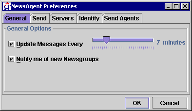

The Preferences Dialog: General Panel |
You can access the preferences dialog from the Edit: Preferences menu item, then by clicking on the General tab.

The General panel contains general user preference options.
| Preference File Key: | newsagent.general.AutoUpdate, newsagent.general.UpdateInterval |
This controls whether NewsAgent updates the list of messages in the current Newsgroup automatically, and the interval at which it should refresh. You can change the update interval by moving the slider.
|
The maximum time interval using the slider is 30 minutes. You can set a longer time by manually editing the preferences file. See advanced topics [link] for more information on how to do this. |
At the moment, this preference is ignored.
| Preference File Key: | newsagent.general.NewsgroupNotify |
Determines whether NewsAgent should notify you of new Newsgroups whenever you connect to a News Server for the first time in a session.
You can check for new Newsgroups at any time using the Servers: Subscriptions menu item.
At the moment, this preference is ignored.
Save or abort changes to preferences.
Next Page: Send Panel